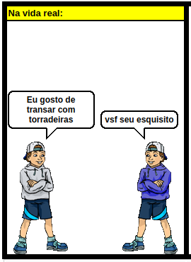
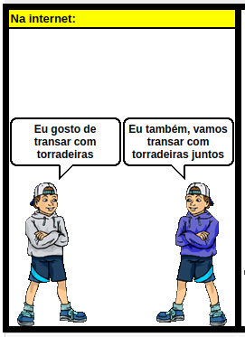
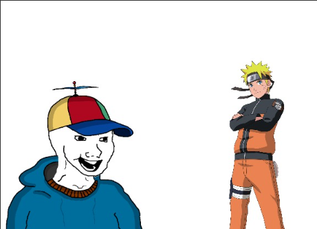
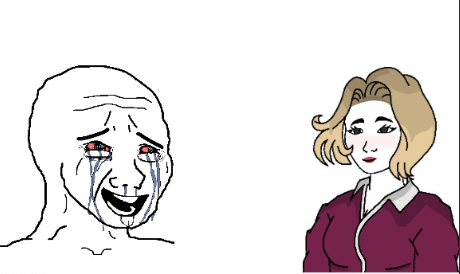

A sociedade já passou por diversas mudanças. Descobrimos o fogo, inventamos a roda, a eletricidade, os carros, o correio, o papel, tortas de chocolate e músicas dos Barões da Pisadinha. Ah, e também inventamos a internet. Mas a internet é diferente das outras. Ela nos permite fazer coisas incríveis! Falar com pessoas de outro mundo em instantes, ver vídeos de como fazer coisas e obter conhecimento sobre tudo! Mas espera... você não sabe qual foi a última vez que usou a internet para algo realmente útil? Que pena. Por que será que isso acontece? Neste post, divagaremos e discutiremos por que a internet se tornou um espaço cujo único propósito parece ser liquidar seu cérebro, quais consequências isso tem e, claro, como sair disso.
Então, se você já fez algum trabalho escolar, já deve saber como a internet foi criada. Segunda Guerra Mundial, ARPANET, comunicação em tempo real, blá blá blá. O irônico é pensar que a ARPANET era uma arma de guerra. Então, lembre-se: toda vez que você usa a internet, está segurando uma arma.
Agora, um tópico realmente interessante. Quando a internet deixou de ser um lugar para compartilhar conhecimento e se tornou um espaço dominado por pornografia, conteúdo tendencioso e propaganda? Minha teoria é que isso começou com o MySpace, lá em 2004. Até então, compartilhar sua opinião na internet era bem difícil (não impossível), mas a internet respirava miniblogs, sites de música e coisas pequenas. O MySpace mudou essa jogada. De repente, qualquer um podia criar um perfil e compartilhar qualquer merda que quisesse—interesses, gostos e coisas assim. Inocente, certo? Errado.
Acontece que a internet, como todo negócio, era um pouco insustentável. O propósito militar já não era mais tão necessário (o exército tem suas próprias linhas de comunicação hoje), então, qual foi a resposta para financiar o crescimento exponencial da internet? Pornografia.

A pornografia sempre foi muito popular e lucrativa, e a internet só melhorou (ou piorou) as coisas: quem antes ia para a parte dos fundos de uma loja de filmes alugados agora podia ver sua dose diária de mulheres nuas no conforto de casa! Que espetáculo.
Junto com a pornografia, vieram as comunidades de fetiches (scat, BDSM e afins), e a internet é o lugar perfeito para que elas proliferarem. Por quê? O exemplo do fetiche com torradeiras explica bem.
Imagine, caro leitor, que você tenha o desejo incontrolável de fazer sexo com torradeiras. Você, obviamente, está cansado de transar sozinho com sua torradeira. Então, decide procurar alguém que goste da mesma coisa:
Pelo visto, encontrar gente com os mesmos fetiches que você é difícil, e se você falar com a pessoa errada, sua reputação vai por água abaixo. Antes da internet, qualquer um tentaria segurar esses desejos únicos e os guardaria pelo resto da vida. Você provavelmente teria uma vida feliz, com uma família que te ama, e morreria contente.
Mas oops, a internet existe. Então... o que acontece se você perguntar online?
Caramba! Você descobriu uma enorme comunidade de amantes de torradeiras! Você deve ser a pessoa mais feliz do mundo agora, não é? Agora que tem um grupo que te apoia, você mostra esse lado para sua família (e sofre a rejeição esperada) e passa o resto da vida em encontros e festas onde todos transam com torradeiras. No fim, você morre de overdose em uma festa aleatória aos 29 anos. Que vida, hein? Pelo menos aproveitou... né?
Esse é o maior problema da internet: muita aceitação e pouco julgamento (nas coisas que realmente merecem julgamento). Tá tudo bem ter um gosto estranho, mas algumas coisas são preocupantes: transar com torradeiras não é saudável e é fruto de um distúrbio bem sério. Mas, como na internet se fala sem rosto e com identidade anônima, o medo de ser julgado por compartilhar e exaltar esses distúrbios como se fossem normais é quase inexistente. Embora isso tenha ajudado a impulsionar comunidades que realmente merecem aceitação, vale perguntar: será que vale a pena mesmo?
Agora, um tópico difícil de escrever, porque eu gosto de anime, mas verdades precisam ser ditas, então lá vai.
Por que o anime é tão popular? Pelo simples fato de dar às pessoas algo com que sonhar. Não digo que todo mundo sonha em ser Naruto ou Sasuke, mas há algo mais profundo. Para isso, usarei outra analogia.
Patrick é um garoto de 16 anos no ensino médio. Um nerd clássico: excelente academicamente, nunca apronta. Seus pais estão orgulhosos, seus professores acham que ele tem um futuro brilhante. Mas quem não gosta disso? Os bagunceiros. Para eles, a ideia de alguém ser melhor (sim, melhor) é inaceitável. Por isso, Patrick sofre bullying desumano: deveres rasgados, bolinhas de papel com cuspe, agressões físicas e humilhação padrão. No almoço, a garota popular (que só é popular porque começou a beijar moleques aleatórios cedo) se aproxima e pergunta se ele quer sair mais tarde. Será a chance de Patrick finalmente se tornar popular? Não, com certeza não. Ao chegar no lugar combinado, ele leva uma surra. Ok, faz parte. Chega em casa, diz à mãe que os machucados são da bicicleta (ela não se importa em checar e parece não notar que ele “cai” toda semana) e vai pro quarto.
Ele liga seu anime favorito e, enquanto vê as lutas, imagina: “E se eu fosse forte assim? As coisas seriam diferentes. Eu poderia dar uma surra naqueles caras e todo mundo ia querer ser meu amigo.”
Embora essa história seja inventada e tenha desviado do foco, a razão da popularidade dos animes está aí, mesmo que seja difícil admitir: o pensamento de que você *poderia* ser tão forte é reconfortante. É o mesmo motivo pelo qual animes e filmes de romance são populares: o sonho de viver um romance perfeito, de ser forte, misterioso ou melhor é irresistível de imaginar.
Claro, isso não vale pra todo mundo. Alguns assistem anime porque a realidade os decepciona diariamente. Outros, só pra passar o tempo. Mas essa é a razão de alguns assumirem a personalidade de um personagem: é simplesmente bom demais.
O OnlyFans é mais um exemplo claro de que o humano médio sempre vai colocar dinheiro acima da dignidade (isso, claro, se você acha que se expor na internet é minimamente vergonhoso).
O trabalho sexual sempre existiu, e não tenho muito a dizer sobre isso. O que quero destacar é que, por incrível que pareça, o OnlyFans e plataformas parecidas te dão mais a sensação de uma relação emocional com a moça por trás da tela do que realmente transar com ela. Por quê? Embora o sexo seja íntimo, a trabalhadora deixa claro que é só uma relação profissional. Ninguém sente nada por ninguém, e se você sente, haha, ela já ouviu isso tantas vezes que nem faz mais efeito.
Agora, pro homem solitário que doa 200, 300 por mês pra essas mulheres e recebe áudios agradecendo, o chamando de “querido” e vídeos personalizados, realmente parece uma relação sentimental. E embora a maioria seja esperta o suficiente pra não cair nisso, às vezes a solidão fala mais alto.
Às vezes, quando você está muito deprimido, essa parece ser a única saída. A internet tem o infeliz poder de potencializar qualquer vontade suicida. Mas por quê?
O humano nasceu como um ser sociável, mas a internet está nos mostrando que socializar demais faz mal. Vemos pessoas perfeitas, corpos perfeitos, rotinas perfeitas, casais perfeitos, filhos perfeitos, e comparamos. *Por que meu corpo não poderia ser assim? Por que minha vida não poderia ser assim?* Junto disso, vêm fatores externos: problemas em casa, disforia de gênero, outras coisas tristes que deixo à imaginação do leitor, e pronto, você tem uma bomba prestes a explodir.
Como já disse, isso não é regra: alguns, como eu, encontram conforto e aceitação na internet, e isso é uma das coisas boas que ela proporciona. Se você se sente sufocado nas redes sociais, dê uma pausa, curta a vida e saiba que nada é perfeito nesse mundo. Quem parece perfeito só está escondendo as falhas.
E pra todos os leitores: se você tem aquele amigo que você sabe que está passando por dificuldades, já foi ver como ele está? Se não, saia deste post e vá falar com ele. Mostrar que se importa é a melhor coisa que você pode fazer.
Pra quem não quiser ler tudo, em resumo: Não, pelo menos pra internet.
A internet é indispensável, e parar de usá-la completamente é impossível. Mas você pode limitar o uso: não tenha contas em todas as redes sociais, converse só em grupos confiáveis, não deixe a polícia federal te vigiar, evite aparelhos de última geração, foque no que funciona.
A internet é um lugar assustador, caro leitor, mas é você quem decide se ela vai te controlar ou não.